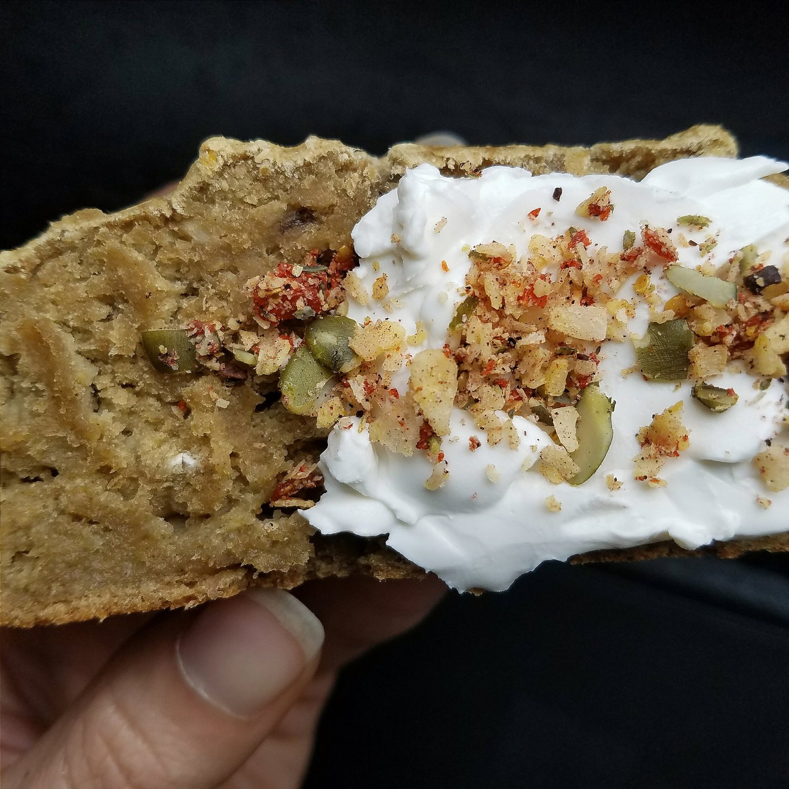
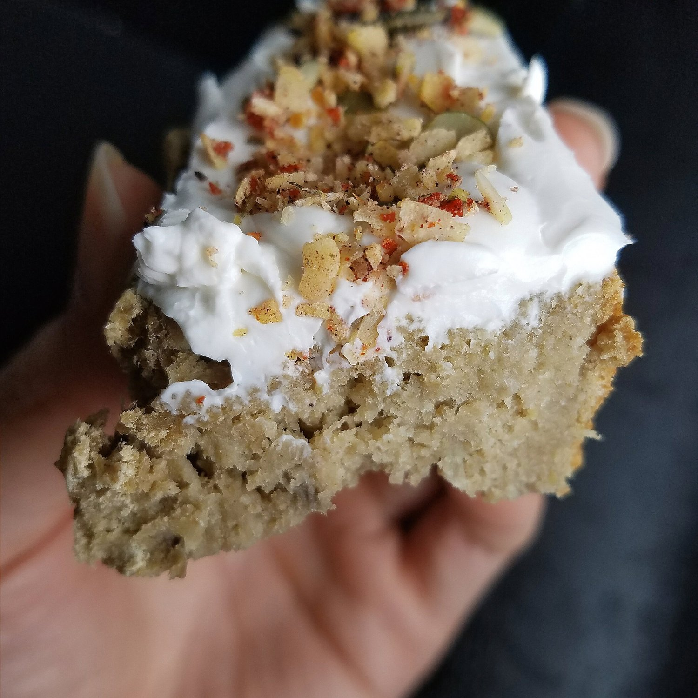

Pumpkin Seed Banana Bread (vegan, gluten free)


Sweet, delectable pumpkin seed banana bread. This recipe is completely vegan, gluten free, and sugar free! Whether you're looking for a new twist on a classic recipe, or just wanting a healthy dessert or snack, this recipe is sure to please!
Banana bread is easily my favorite baked food to make. I always seem to eat the loaf in 2 or 3 days because it's just so moist and delicioussss. I added pumpkin seed protein for the first time and I'm obsessed with how it made the texture. Kind of chewy, more sturdy? I don't know how to explain it, but I like it a lot!!
The flavor is sweet, naturally sweet from the bananas, but wholesome from the pumpkin seeds. S'goooood. I topped this slice with vegan cream cheese and sprinkles of Blend Co, which has pumpkin seeds in it! This is my favorite topping for this recipe; it truly completes it.
I rode my bike 42 MILES this weekend!! That's the biggest ride I've ever done. AND it was my highest power and speed on the road! It was....amazing and more than I could have anticipated. I wish I could've rigged my phone up on my bike to have my pokemon eggs hatch faster XD but I didn't think there was a way hahah. Oh well. The ride was amazing. It was going to just be me, a cycling friend, and her friend, but it ended up being 9 of us! I invited a coworker and it was great. We rode on Silver Comet Trail. It's a great ride, but unfortunately the first 10 miles or so are conjested with pedestrians and runners. But after the big crowd it's so pleasant and shaded.
I get a lot of crap for using a bike trainer and using Zwift virtual rides. Because my power and speed has been logging in higher than it was on the road. But my speed and power was THE SAME on the road this weekend as it has been on Zwift lately, and double the distance that I average on Zwift. It came in at 16 mph with 165 Watts power. So clearly, the trainer is no joke! I'm still putting in time and work. I'm still sweating just the same. And I'm improving. :) Bike trainer love.
I really recommend Zwift virtual courses if you're in a situation like I am where, for some reason, you can't always bike on the road. Although - it is good to get out while you can and experience sunshine! But for me, the traffic is just too unsafe around here. All the groups here have VERY frequent crashes because of aggressive Atlanta drivers and dangerous courses. Plus with traffic, it just makes it too time consuming to even make it to a group ride during the week. So I use the trainer during the week, and go outside on weekends. It also allows me to watch Pesto and not leave him alone a lot. It's been perfect. Can't wait to see how things progress in the future!!
If you had to choose one thing to spend time cooking or baking this week, make this!! It will yield 8 servings to enjoy all week. Hopefully. If you're not like me and eat it in 2 or 3 days.. Ha. But seriously. This vegan pumpkin seed banana bread is a to die for healthy treat!!
Pumpkin Seed Banana Bread
Serves: 8
-
3 medium bananas (ripe and mashed)
-
1 scoop vanilla pumpkin seed protein (My Pure Goodness brand)
-
1.5 cups raw oats (ground into a flour)
-
1/2 cup buckwheat flour
-
1/2 TBSP baking powder
-
1/4 cup baking stevia (Optional)
-
1/2 cup unsweetened almond milk
First, make sure your oats are ground into a flour. Mash the bananas, then add the remaining ingredients and mix evenly. Pour in a sprayed bread loaf pan. Bake at 350 F for 40 mins. Let cool for 15 minutes, then cut into 8 slices and enjoy!
140 cals a slice; 2 g fat, 27 g carb (4 g fiber), 6 g protein